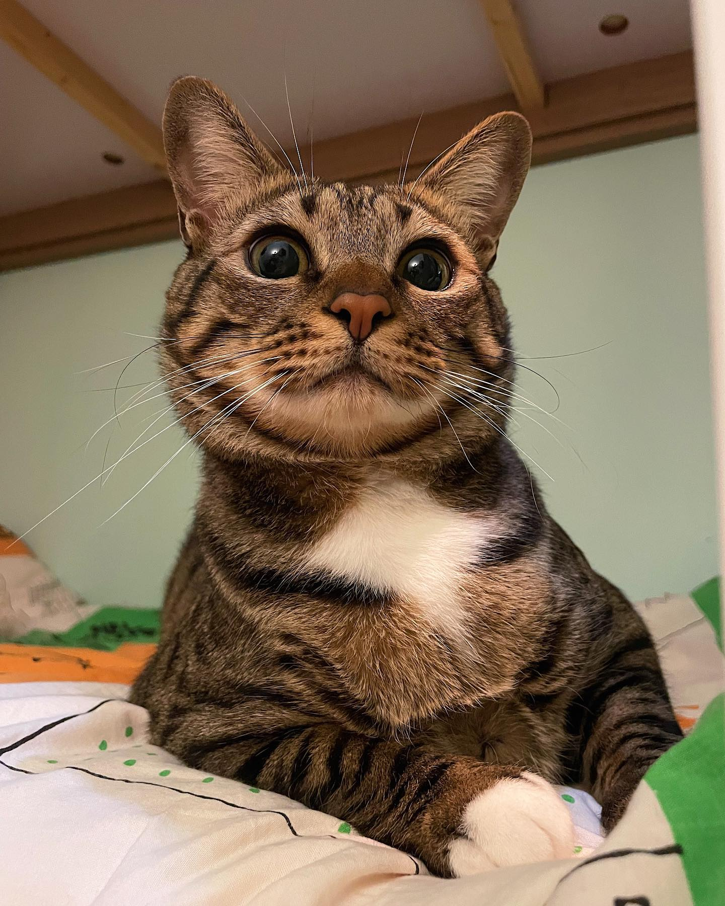
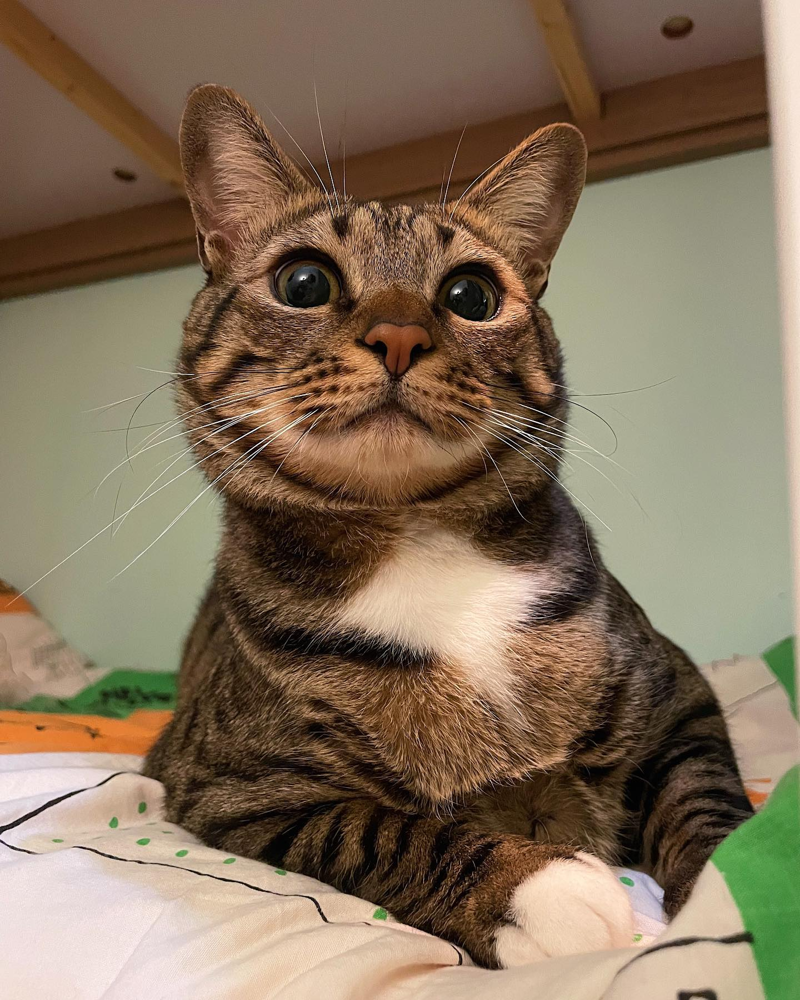

Gatti
Questo sito fornirà una piccola descrizione per alcune categorie di gatto, con qualche foto.
Dalla pagina Lista è possibile scegliere la razza di gatto della qualche si vuole sapere di più.
Dalla pagina Cat Rating è possibile usare la nostra sofisticata intelligenza artificiale per determinare quanto siano belli i vostri gatti.